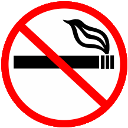
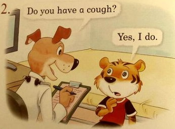
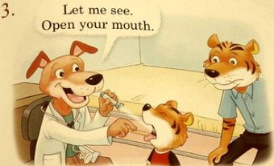

Инфинитив или герундий. Часть 3
Данный урок доступен бесплатно в приложениях на iOS и андроид:


Продолжаем разбирать глаголы, после которых идёт инфинитив или герундий (начало в уроке 40). В предыдущих уроках глаголы давали разницу в значении (см. урок 45 и урок 46). В этом уроке будут глаголы, значение которых меняться не будет. Инфинитив или герундий ставятся в зависимости от того, есть ли после них дополнение или нет.
recommend
The doctor recommended buying some expensive pills. – Врач порекомендовал купить какие-то дорогие таблетки.
The doctor recommended me to buy some cheap tablets. – Врач порекомендовал мне купить какие-то дешёвые таблетки.
Как видите, разница этих двух предложений только в наличии дополнения в виде ‘me’. На дороговизну таблеток это не влияет, просто добавляем важные слова в наш словарный запас, которые не попались нам раньше.
Разница между таблетками ‘pill’ и ‘tablet’ в том, что ‘tablet’ это ‘таблетка’ в привычном понимании этого слова, в то время как ‘pill’ включает в себя как обычные ‘tablets’, так и другие виды, например, капсулы, поэтому слово ‘pill’ используется чаще. Для дословного перевода: ‘pill’ это ‘пилюля’.
advise
Есть существительное advice /əd'vaɪs/ совет, а есть глагол advise /əd'vaɪz/ советовать. Разница в предпоследней букве, которая, в свою очередь, меняет и звук.
The doctor advised me to take this medicine twice a day. – Врач посоветовал мне принимать это лекарство два раза в день.
The doctor advised taking this medication on time. – Врач посоветовал принимать это лекарство вовремя.
Хотелось бы давать только одно слово в пример, но используют и то, и другое в одинаковом значении. Это я о medicine /'medɪsɪn/ и medication /ˌmedɪ'keɪʃən/, означающие ‘лекарство’. Сокращённо в этом значении их можно называть: meds. Оба слова обычно используются в единственном числе, как неисчисляемые, но если речь о разных типах лекарств, то говорят во множественном числе. Также имеют и другие значения: medicine медицина, medication лечение. Ну, и чтобы компания была полной, надо сказать, что слово drug /drʌg/ тоже может быть точно таким же ‘лекарством’, как и те два. Но чаще под ним понимается либо какое-то сильнодействующее лекарство, либо запрещённые лекарства или вещества, в т.ч. и ‘травка’, про которую пошутила девочка Сара в уроке 15 (помните такое, да?)...
allow
They don’t allow smoking inside their house. – Они не разрешают курить в (досл.: внутри) их доме.
They don’t allow us to smoke inside their house. – Они не разрешают нам курить в их доме.
Smoking is not allowed. – Курение не разрешается.

No smoking
Надпись говорит о том, что в смокингах ходить запрещается. Шутка. Что курение запрещено. (смокинг это tuxedo /tʌk'siːdəʊ/)
permit
Вы знаете существительное permit /'pɜːmɪt/ разрешение; пропуск. Есть ещё глагол permit /pə'mɪt/ позволять, разрешать. Этот глагол ведёт себя точно так же, как и глагол ‘allow’ с той лишь разницей, что он обычно используется в более официальных ситуациях. Например, если в примерах выше нам кто-то не разрешил сделать что-то, то в примерах с ‘permit’ нам, скорее всего, будут запрещать не кто-то, а какие-либо законы или правила... но его можно использовать и точно так же в примерах выше, просто уровень формальности будет выше.
The rules do not permit drinking water inside the lab. – Правила не разрешают пить воду в лаборатории.
The rules do not permit you to drink water inside the lab. – Правила не разрешают вам пить воду в лаборатории.
Drinking is not permitted. – Пить не разрешается.
By the way (кстати), если ‘запрет’ начинается с безличной формы, например, ‘it is not permitted’ не разрешается, то после него может стоять только инфинитив.
forbid
| Инфинитив | Прошедшее | Причастие II | Перевод |
| forbid /fə'bɪd/ | forbade | forbidden | запрещать |
The authorities forbade parking in front of the building. – Власти запретили парковаться напротив здания/перед зданием.
The authorities forbade us to park in front of the building. – Власти запретили нам парковаться напротив здания.
Thor forbids Loki from leaving Asgard again. – Тор запрещает Локи снова покидать Асгард.
С глаголом ‘leave’ (и не только) часто используют третий вариант, с предлогом ‘from’ и герундием. Возможно, это просто разговорный вариант... В последнем примере можно или нужно и по правилам: ‘to leave’.
require
The project requires working outside of working hours. – Проект требует работать в нерабочее время/после работы.
The project requires us to work outside of working hours. – Проект требует (от нас того), чтобы мы работали в нерабочее время.
Болезнь
‘Пилюли’ в начале урока были даны не просто так, а чтобы совместить их с этой мини-темой урока. Только самое основное, потому что словарь очень быстро наполняется новыми словами...
Exercises are good for health. – Упражнения полезны для здоровья.
An apple a day keeps the doctor away. – Кто яблоко в день съедает, у того врач не бывает. (досл.: яблоко в день держит доктора подальше, пословица)
В предыдущем уроке у нас была фраза ‘catch (a) cold’ простудиться. Многие должны были догадаться, что ‘cold’ это ещё и ‘простуда’ (‘cold’ также включает в себя и ‘насморк’). Обратите внимание на предлог ‘for’ в примере ниже:
I’m taking medication for my cold. – Я принимаю лекарства от простуды.
I’m taking medicine (также: (a) medication). – Я принимаю лекарства/лекарство.
I’m on medication. – Я принимаю лекарства (досл.: я на лечении/на лекарствах)
Из-за того, что ‘простуда’ и ‘насморк’ тесно переплелись между собой, вам также могут понадобиться следующие пару фраз насчёт вашего носа nose /nəʊz/:
I have a runny nose. – У меня насморк.
My nose is running. – У меня течёт с носа.
pain и hurt
‘А как вообще болеть-то по-английски? У нас же уже были слова ‘pain’ болеть; боль и ‘hurt’ причинить боль; болеть – они?’ Вопрос хороший, но со словами вы не угадали. ‘Pain’ и ‘hurt’ используются, когда у вас что-то болит, а не когда вы болеете. Фильм такой есть, ‘Майор Пэйн’ (также игра ‘Макс Пэйн’): хотя ‘Пэйн’ там написано, как ‘Payne’, подразумевается в нём именно ‘pain’.
‘Pain’ чаще используется как существительное ‘боль’; в качестве глагола оно обычно показывает то, как ‘больно’, в значении ‘грустно’, что-либо делать.
‘Hurt’ чаще используется как глагол в тех случаях, когда причинили какую-либо боль, в т.ч. душевную; а также когда что-нибудь болит. Examples:
It pains me to think you will no longer be with us. – Мне больно думать, что ты больше не будешь с нами.
Be careful*, don’t hurt yourself. – Будь осторожен, не поранься.
Oh, she hurt your feelings. – О, она задела/ранила твои чувства.
My arm hurts. – Моя рука болит.
I feel pain in my arm. – Моя рука болит/Я чувствую боль в руке.
* Забавный кусочек видео на эту тему (также из Uncharted):

ill и sick
Для слова ‘болезнь’ тоже есть два слова. Ну, любят англичане, когда много слов... Оба слова ill и sick означают ‘больной, нездоровый’
I got ill (можно: sick). – Я заболел.
I’m sick (можно: ill). – Я болен.
I’m sick (and tired) of your excuses (здесь ‘ill’ нельзя). – Я устал/Меня тошнит от твоих отговорок (досл.: меня тошнит (и я устал), но переводят обычно одним словом).
Для кратковременных заболеваний обычно используют ‘sick’, а для тех, что длятся долго, т.е. что-то серьёзное, используют ‘ill’. ‘Ill’ имеет более широкое значение, поэтому может использоваться на месте ‘sick’, а наоборот нельзя. ‘Sick’ же, в свою очередь, имеет дополнительное значение, связанное с тошнотой, укачиванием или просто резко стало плохо... Кроме того, ‘sick’ используется, когда человек раздражён или ему скучно от того, что постоянно что-то происходит не так (пример выше).
‘А где там слово ‘болезнь’-то, а то я что-то не вижу...’ I’m getting to that. Никакого терпения... В общем, от прилагательных могут образовываться существительные путём прибавления суффикса -ness. У нас было уже несколько слов с этим суффиксом: business (y → i), greatness, unpleasantness, foolishness. Если слово заканчивается на -n: openness /'əʊpənnəs/ откровенность; прямота. С помощью него и получаются слова: illness и sickness, означающие: болезнь. А разницу между ними вы уже знаете. Интересно, что свадебная клятва включает слова: in sickness and in health в болезни и здравии.
Но это не всё, есть ещё одна болезнь: disease /dɪ'ziːz/. Но здесь проще. Это не просто ‘болезнь’, а конкретное ‘заболевание’, т.е. вы, скорее всего, его узнаете от врача. ‘Заболевание’ – у органа, ‘болезнь’ – у человека. ‘Заболевание’ надо лечить, с ‘болезнью’ надо справляться.
Часто также можно услышать слова: flu /fluː/ (сокращение от influenza /ˌɪnflu'enzə/) грипп; cough /kɔf/ кашель и кашлять; headache /'hedeɪk/ головная боль.
На этом достаточно. Закончим картинкой, случайно найденной мною в интернете, из какой-то книги. Вы сами её переведёте (mouth /maʊθ/ рот). Чем-то напомнила она мне посещение бесплатной поликлиники, только врачи там не такие позитивные...




Тем временем, Нейт и Сэм пробрались в огромный особняк в поисках вещей своей мамы:

— So, where are we going?
— Huh?
— Well, if you could go anywhere in the world. Where would you pick?
— Anywhere?
— Anywhere.
 — Okay, well... Here we go... India.
— Okay, well... Here we go... India.
— Yeah, we’ll visit the Taj Mahal.
— Round and round she goes... Soviet Union. Let’s go to Moscow.
— Yeah, might be a tad difficult to get in. Always wanted to see the Red Square though. ...
— Since when do you like classical music?
— ‘Scuse me, I am a man of many tastes.
N: — I’ve never seen this one.
S: — Yeah, me either. But that... Yeah, that’s definitely mom’s handwriting.
W: — Put up your hands. Slowly.
S: — Hey, hey, hey. There’s no need for that.
W: — What is he holding?
S: — Hey, hey, hey! You keep your gun on me.
W: — Give me my journal1 (coughs).
S: — All right... All right... I’m sorry, Nathan. So, what now?
W: — Now... we wait... (sighs) for the police.
S: — Yeah, you don’t want to have to deal with that headache...
W: — Stop.
S: — I mean, the hassle of ruining two kids’ lives. That’s...
W: — I really don’t want to shoot you.
S: — C’mon, lady. It was no harm no foul, all right?
W: — We all must face the consequences of our actions. Hmm?
S: — Then at least let him go. I brought him down here so he could see our mom’s stuff. That’s it. He had nothing to do with this.
W: — What?
S: — I’m telling you that this is all on me.
W: — No. Your mother’s... stuff.
S: — Yeah, that... that journal... it was our mom’s.
W: — You’re Cassandra Morgan’s boys.
S: — Uh... hi.
W: — My God. (coughs) I could’ve shot you.
S: — Yeah, you still might, so uh... do you mind?
N: — You knew our mom?
W: — She worked for me. As I’m sure you’ve noticed... I’m a collector of sorts.
S: — That’s sort of an understatement.
N: — So... Mom was, like, your translator?
W: — Your mother... was the most brilliant historian I have ever met. We could have accomplished so much together. But then her illness, it... I’m sorry.
S: — No, it’s all right. Happened a long time ago.
W: — Of all her discoveries... this would have been her crowning achievement. “Sic parvis magna.”
N: — Greatness from small beginnings.
S: — Sir Francis Drake’s motto. Yeah, Latin and historical figures... Those were dinner conversations. We were ah, a weird family.
W: — Did she ever tell you her theories regarding Sir Francis Drake and his heirs?
S: — Uh...
N: — Sir Francis Drake didn’t have any heirs.
S: — Yeah.
W: — Uh-huh. That’s what history tells us. But your mother and I believed otherwise. Learning that old pirate’s secrets is just one more adventure I have to let go. I guess there’s a lot I have to let go... Forgive me. Ramblings2 of an old woman. Here. It is as much yours as it is mine. Who knows? Perhaps one day you’ll be able to finish what she started.
S: — Ah... Yeah, so uh... we’re off the hook, right?
W: — I’ll handle the police. You found your way in. I trust you can see yourself out3, hmm?
S: — Yeah.
N: — Here.
W: — Thank you.
N: — I’m sorry about the mess4.
Notes:
- ‘journal’: дневник. Имеется в виду ‘личный журнал’, в таком случае его можно перевести как ‘дневник’.
- ‘ramblings’ /ræmblɪŋz/: бред. Этим словом можно описать чью-то речь или часть текста, потому что она бессмысленная, а человек, которому она принадлежит, либо запутался, либо сошёл с ума.
- ‘see oneself out’: знать, где выход; найти выход самому.
- ‘mess’, здесь: доставленные неприятности. ‘Беспорядок’ Нейт и Сэм за собой не оставили, поэтому здесь имеется в виду второе значение: неприятность. Хотя ‘беспорядок’ подразумевается, но не привычный нам, а то, что они создали ‘хаос’ от своего присутствия, который имел последствия...
Словарь
achievement /ə'ʧiːvmənt/ достижение
action /'ækʃ(ə)n/ действие, поступок
adventure /əd'venʧə/ приключение
advise /əd'vaɪz/ советовать
cheap /ʧiːp/ дешёвый
classical /'klæsɪk(ə)l/ классический
cold /kəʊld/ adj. холодный; n. холод; простуда, насморк
consequence /'kɔnsɪkwəns/ (по)следствие, результат (чего-л.)
cough /kɔf/ n. кашель; v. кашлять
crown /kraʊn/ n. корона; v. короновать
crowning achievement главное, высшее достижение
definitely /'def(ə)nətlɪ/ определённо, точно, явно
disease /dɪ'ziːz/ заболевание, болезнь
exercise /'eksəsaɪz/ упражнение
expensive /ɪk'spensɪv, ek-/ дорогой, дорогостоящий
face /feɪs/ n. 1) лицо; v. 2) стоять лицом к лицу; 3) сталкиваться (с неприятностями)
figure /'fɪgə/ v. считать, думать, полагать; n. личность, фигура
flu /fluː/ грипп
forbid /fə'bɪd, fɔː-/ запрещать; не позволять; прош. вр. forbade /fə'beɪd, fɔː/; прич. II forbidden /fə'bɪd(ə)n, fɔː-/
foul /faʊl/ что-либо грязное или дурное
handwriting /'hændˌraɪtɪŋ/ почерк
harm /hɑːm/ вред; убыток, урон, ущерб
hassle /hæsl/ трудность; беспокойство, неудобство; морока, хлопоты
headache /'hedeɪk/ головная боль
health /helθ/ здоровье
hook /hʊk/ крюк, крючок
ill /ɪl/ больной, нездоровый
illness /'ɪlnəs/ нездоровье; болезнь, заболевание
let go (of) отпускать
medication /ˌmedɪ'keɪʃ(ə)n/ 1) лечение; 2) лекарство, препарат, средство
medicine /'medɪsɪn, -ds(ə)n/ 1) медицина; 2) лекарство, медикамент
mouth /maʊθ/ рот
nose /nəʊz/ нос
permit /pə'mɪt/ позволять, разрешать
pill /pɪl/ пилюля, таблетка
ramblings /'ræmblɪŋz/ бред (о речи)
Red Square Красная площадь
regarding /rɪ'gɑːdɪŋ/ относительно; касательно
sick /sɪk/ больной, болезненный; нездоровый; чувствующий тошноту
sickness /'sɪknəs/ 1) болезнь, заболевание; 2) тошнота
so /səʊ/ 1) так что, поэтому; 2) так, такой; 3) итак; значит (в начале предложения); 4) для того, чтобы; с тем, чтобы
Soviet /'səʊvɪət/ adj. советский; n. гражданин СССР
tablet /'tæblət/ 1) таблетка; 2) планшет
tad /tæd/ капелька, чуточка
Taj Mahal /ˌtɑːʒmə'hɑːl/ Тадж-Махал (мавзолей-мечеть)
theory /'θɪərɪ/ теория
translator /trænz'leɪtə, trɑːn-/ переводчик
understatement /ˌʌndə'steɪtmənt/ преуменьшение
union /'juːnjən/ союз
weird /wɪəd/ разг. странный, чудной
Exercises
Exercise 1. Translate from Russian into English. (translate /trænz'leɪt/ ← translator)
- Я запретил вам прикасаться к чему-либо здесь.
- Врачи советуют есть меньше жирной пищи.
- Оно требует от вас, чтобы вы думали о том, что делаете, когда вы это делаете.
- Новые правила не разрешают пересекать улицу в течение ночи.
- Ваша мать разрешает вам носить её туфли или платья?
- Что ваши родители запрещали вам делать, когда вы были моложе?
- Что разрешено и что запрещено приносить на ту территорию?
- Вы бы порекомендовали изучать иностранные языки?

Exercise 2. Translate from Russian into English.
- Вы приняли свои лекарства?
- Я заболел. У меня головная боль и кашель.
- Врач даже не попросил кашлянуть (досл.: не спросил меня покашлять).
- Что (досл.: какая/какой вид) у меня за болезнь?
- Мне больно подумать, что ты мог себя поранить.
- Фрукты полезны для здоровья.
- Вот (досл.: здесь) таблетки, которые ты хотела, чтобы я купил, от твоей простуды.
- Кто яблоко в день съедает, у того врач не бывает. (не подглядывать в урок)
Exercise 3. Make nouns from the following adjectives, then translate them into Russian. Образуйте существительные из следующих прилагательных, затем переведите их на русский язык.
Example: crazy → craziness сумасшествие
Курс доступен в виде приложения на iOS и андроид (подробнее в уроке 1):